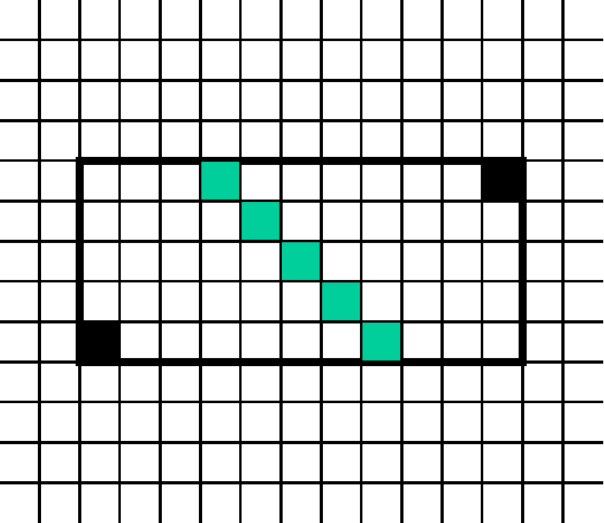

Soient deux points P1 : (X1, Y1) et P2 : (X2, Y2).
On donne ΔX = X2 - X1 et ΔY = Y2 - Y1
La distance de Manhattan entre P1 et P2 est :
distM = |ΔX| + |ΔY|
Un avantage de la distance de Manhattan est de fournir
une distance de type entier.
Calcul des points milieux

Il n'existe de points milieux que si ΔX et ΔY sont pairs.
Les points milieux sont situés sur une diagonale
(droite de pente 45 ou -45 degrés)
passant par le point milieu euclidien, à l'intérieur
d'un rectangle dont les coins opposés sont P1 et P2.